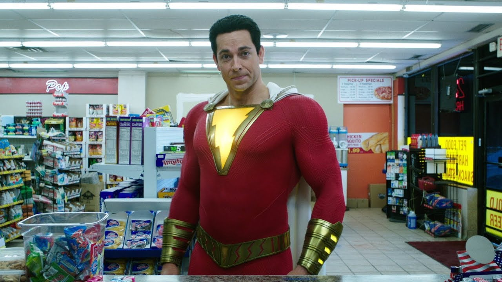

Warner Bros. Pictures Group produces and distributes wide-ranging slate of films each year, employing a business that mitigates risk while maximizing productivity and capital. Warner Bros. Pictures fully finances or co-finances the films it produces and maintains distribution rights to them. It also monetizes its distribution and operations by distributing films that are fully financed and produced by our third parties.

In 2019, Warner Bros. Pictures Group will continue to create the industry’s broadest slate, featuring Studio’s DC Super Heroes, New Line movie horror titles, thoughtful dramas and genius comedies. Highlights of the 2019 release schedule include “The LEGO Movie 2: The Second Part,” “Shazam!”, “The Curse of La Llorona”, “Godzilla: King of the Monsters,” “It Chapter 2”, and “Joker”.
New Line Cinema, part of Warner Bros. Entertainment since 2009, coordinates development, production, marketing, distribution, business affairs and activities with Warner Bros. Pictures to capitalize film performance and operating efficiencies. New Line’s 2019 release slate, by Warner Bros., includes “Isn’t It Romantic,” “Shazam!,” “Shaft,” “It Chapter 2,” and “The Kitchen.”